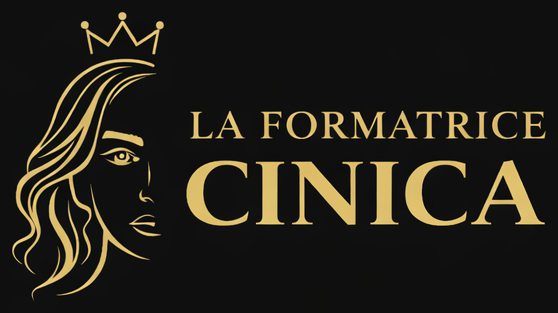

Sono Gabriella Femia. Formatrice, coach, mentor. Lavoro con persone vere, in stanze vere, con problemi veri — da prima che il coaching diventasse un'estetica da Instagram.
Ho cominciato costruendo reti vendita per grandi aziende, insegnando comunicazione verbale, non verbale e paraverbale, formando manager al public speaking. Ho lavorato in aziende da 1.500 collaboratori. Ero l'unica donna in quel ruolo, e i corsi — anche quelli a pagamento diretto — facevano la fila.
Poi è arrivato il lockdown. Mia figlia, l'intervento, tre anni chiusa in ospedale. Ho perso visibilità, clienti, carriera. La competenza no — quella in tre anni non svanisce.
Sono ripartita da freelance. Ho studiato biohacking e neurohacking. Ho creato nuovi corsi. E ho applicato su me stessa, in condizioni che poche persone si augurerebbero, esattamente gli stessi strumenti che insegno alle altre. Non è storytelling. È la mia credenziale più forte.
«Uso su di me ogni strumento che insegno. Per questo so che funziona — e dove non funziona.»
Senza cattedra, senza la puzza sotto il naso. Ho studiato trent'anni senza laurea. Per questo so spiegarlo a chiunque.
Non prometto risultati che dipendono da variabili fuori dal tuo controllo. Dico come stanno le cose. Chi mi trova non mi molla più.
Tre anni in ospedale, carriera smontata e ricostruita. Il metodo l'ho usato prima su di me. Per questo non è teoria.
Oltre tre decenni in formazione, distillati in cinque tappe. Niente curriculum gonfiato, solo le cose che hanno costruito il metodo.
Costruzione di reti vendita per grandi aziende. Comunicazione, public speaking, formazione manageriale. Pochissime donne nel ruolo. Tante stanze, pochi filtri.
Apertura del percorso 1:1. Si lavora sugli automatismi, non sulla superficie. Pre-call con questionario: arrivano allineate, non curiose.
Lockdown e ospedale. Il metodo applicato a me stessa, in condizioni che non augurerei. Quando sparisci, sparisce il tuo nome — non la competenza.
Studio sistematico di sonno, ormoni, dialogo interiore. Integrazione con i 30 anni precedenti. Nasce «Biancaneve si è svegliata».
Rilancio del corso in più città italiane. Apertura dei corsi registrati. La Formatrice Cinica diventa anche un brand digitale, non solo una sala riunioni.
Non lavoro con tutte. Non perché «non posso»: perché non voglio lavorare con chi non è pronta a fare un lavoro vero.
Si parte da una consulenza gratuita. Ma chiariamoci: non è una chiacchierata.